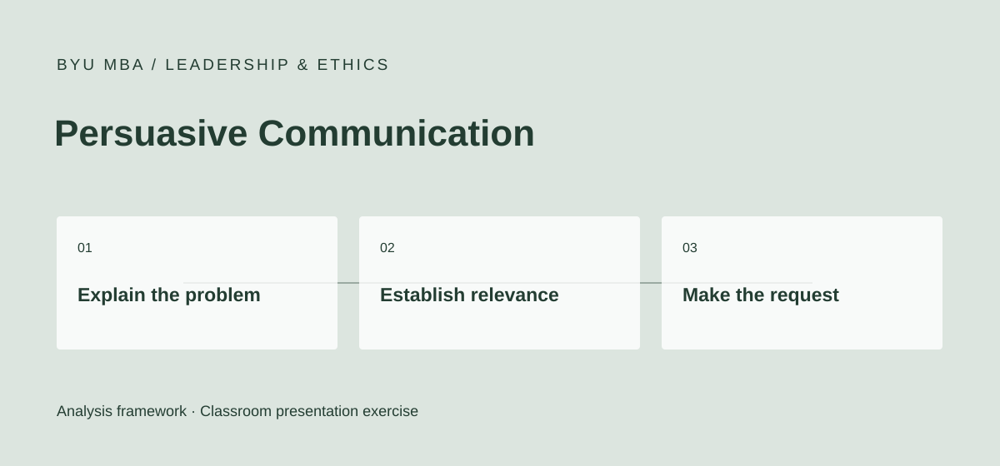

Classroom presentation exercise · 2026
Persuasive Communication: Charity
A classroom presentation exercise followed by peer feedback. My reflection focused on how presence, structure, and a clear closing request affect the audience’s understanding of what to do next.
- My role
- Presenting team member
- Year
- 2026
- Work type
- Classroom presentation exercise
- Focus
- Audience communication · Presentation structure · Call to action

My contribution
I participated in the team presentation and reviewed feedback on my delivery and the effectiveness of the conclusion. The feedback highlighted confidence and an approachable tone, along with an opportunity to make the ending more purposeful.
Analysis
Explaining an issue and making a request are separate communication tasks. An audience may understand the situation without knowing which action the presenter is asking them to take.
Analysis summary
| Presentation element | Purpose | Audience question |
|---|---|---|
| Problem | Explain the situation | What should I understand? |
| Relevance | Connect the issue to the audience | Why does this matter? |
| Request | State a concrete next step | What are you asking me to do? |
Framework summarized from my preparation, analysis, and reflection.
Improved approach
My reflection identified the closing as a part of the presentation that deserves deliberate preparation. The conclusion should connect the issue to the audience, explain why action matters, and state the requested next step.
Business application
The same structure applies to a project recommendation or stakeholder presentation. The analysis should lead to a decision or request that the audience can understand and respond to.